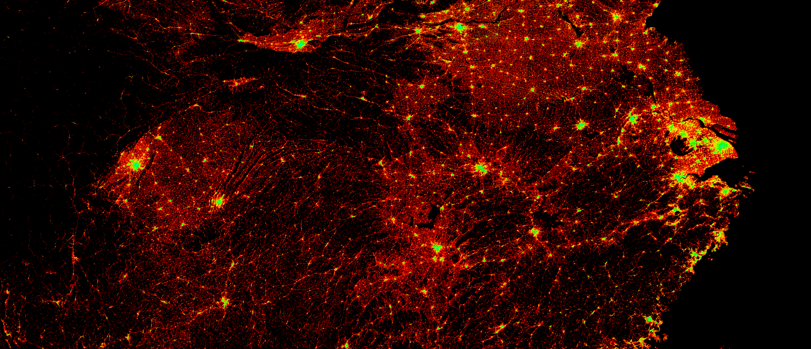
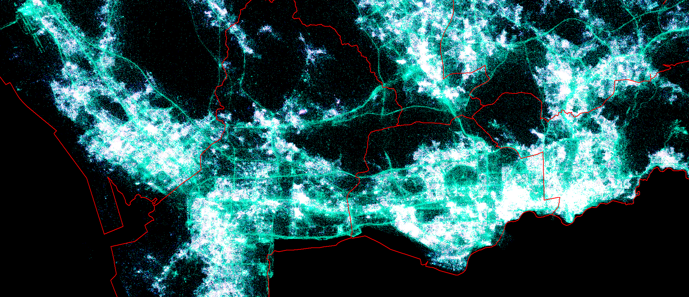
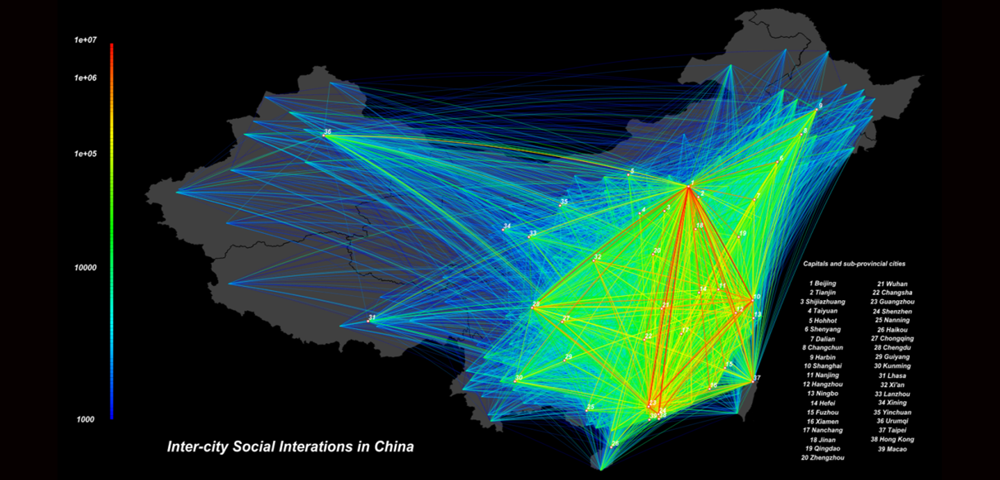
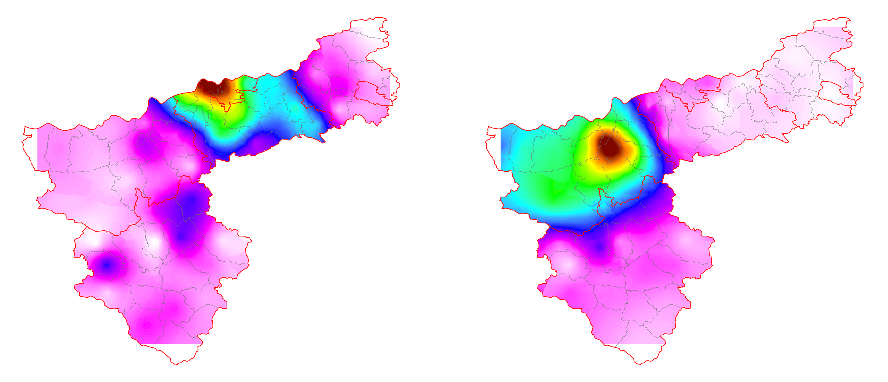
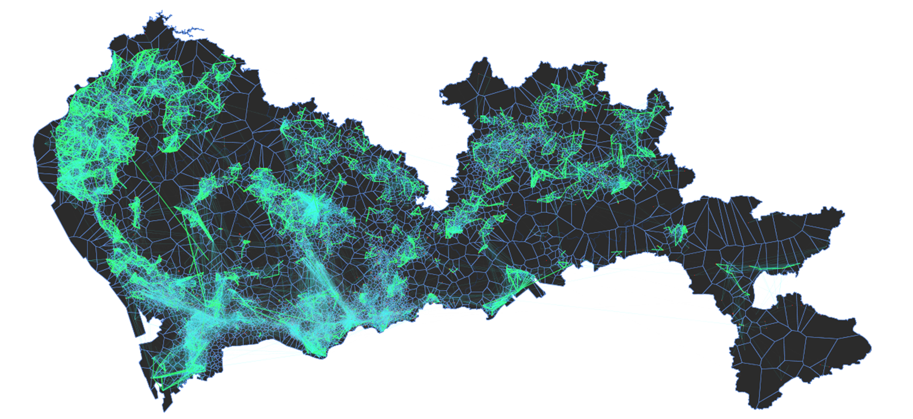
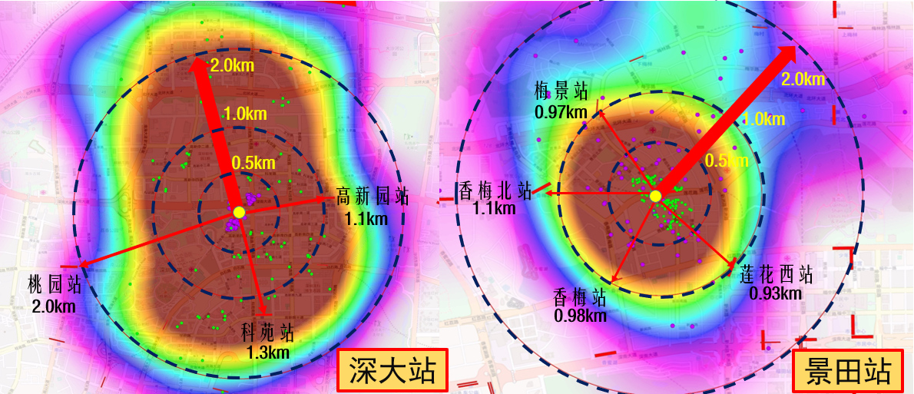
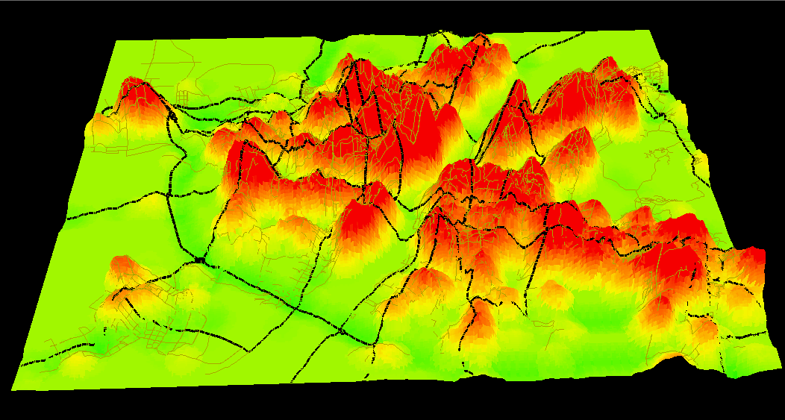

High-resolution Resident Population Distribution (精细化城市居民分布)

人口空间分布是指一定时间点上人口在地域上的分布状况,是人口过程在空间上的表现形式,是人口地理学研究的核心问题,是人地关系研究的重要基础。人口数据空间化是获取人口空间分布数据的有效途径,其在精确刻画人口分布、多源数据融合研究等方面具有重要科学意义。随着遥感、GIS等技术突飞猛进,“社会数据空间化”和“空间数据社会化”（Pixelizing the Social and Socializing the Pixel）已成为地理科学、社会科学共同关注的焦点之一。“人口数据空间化”是其研究的典型代表。人口数据空间化采用适宜的、合理的人口分布指示因素,构建数学模型,将以行政区为单元的人口统计数据展布到一定大小的地理格网上,实现表达人口信息的载体由行政单元向格网转换。。
Large-scale and High-resolution Human Footprints Distribution (大范围高精度人群轨迹分布)
。
High-resolution Human Activity Distribution (高精度城市人群活动动态分布)

。
Land Use and Human Activity (土地利用与人群活动特征分析)
准实时监测城市发展、掌握城市土地利用类型是日趋科学化、合理化进行城市规划的基本要求。遥感作为快速获取地表覆盖的重要手段为城市的动态监测做出了巨大贡献；然而，传统基于物理特性（光谱、纹理等）的地类提取并不能反映城市内部发展程度的差异性；同时，尺度依赖的遥感影像在获取城市概貌与细节之间也不易兼顾。随着信息通信技术、移动互联网技术、位置服务等的发展，海量的手机数据、浮动车数据、公交卡数据、社交网络数据等在内的人类时空活动信息为我们从“人”的角度感知城市空间结构提供了可能。项目基于深圳市百万名社交网络用户一年的电子足迹数据，提出了不同类型的人类时空活动指数以建立人类活动与城市地物间的对应关系；借鉴遥感影像不同波段记录各类地物在特定波谱区间辐射值的思想，生成各类人类时空活动指数波段图；并利用最大似然法对该“类高光谱影像”进行城市土地监督分类，获取城市的土地利用图。。
Analysis of the City Network and City Human Interaction (城市网络与城市关系定量分析)
通过与腾讯公司合作，采集了超过3000万种子用户的基本信息，用户之间的双向社会关系共计3400万对，对腾讯QQ用户进行地理空间定位，以人际社交关系为蓝本，以用户所在的城市（县级）为节点，对用户的微博社交关系进行聚合，研究城际节点之间的强社交关系网。。
City Radiation and Spatial Competitiveness Analysis (城市辐射与空间竞争力分析)
城市辐射力是指城市群中的中心城市对周边城市和地区的综合影响力，以及对周边城市和地区的发展带动力。在大数据缺乏的年代，重力学模型通常被用来区分城市间吸引力的大小；城市断裂点理论作为城市地理学的一个重要理论，被广泛用来确定城市吸引范围的城市经济区的划分。断裂点理论一经提出，就被广泛运用于城市间相互作用的研究。 。在大数据时代，这些传统模拟由于有了海量实证数据实证，模型的准确性、适用范围都受到了挑战。通过计算研究对象城市在某一时段内吸引目标城市的人数占目标城市总人数的比作为指标，来定量刻画城市之间的吸引力，并把该指数定义为城市吸引力指数。
Detection of the Urban Commnunities (城市组团结构分析)
根据居民的时空轨迹数，提取日常出行分布及交互信息采用社群探测 根据居民的时空轨迹数，提取日常出行分布及交互信息采用社群探测 根据居民的时空轨迹数，提取日常出行分布及交互信息采用社群探测 与时序分析相结合的方法，探测城市动态组团构。
Location analysis of Public Facilities (公共设施选址与资源配置)
根据居民的时空轨迹点数据，基于地图匹配和轨迹还原技术，还原出行时空轨迹，探测用户的起讫点，结合建筑物和人口等数据，研究轨道站点的服务范围及服务人群，对轨道辐射理论进行论证。
Research On Low-carbon City (低碳城市研究)
基于智能交通系统（ITS），利用浮动车、线圈、视频等采集实时交通参数，对多源交通信息进行融合，结合城市城市道路拓扑网、地形、气象、机动车技术参数信息，集成微观机动车CO2尾气排放模型，以城市道路路段为基本单元，以时间序列为轴，建立“路段-道路-区域-整个城市”一体的城市道路交通CO2排放时空分布模型。该模型可以对不同时间和空间尺度内的城市道路CO2排放规模进行实时在线估算。。